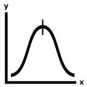

Prev - #15 Median | Table of Contents | Next - #17 Dice Roll
mode([1, 1, 2, 3, 4]) → 1

Mode is the third statistical calculation exercise in this book. The mode is the number that appears most frequently in a list of numbers. Together with the median and average, you can get a descriptive summary of a list of numbers. This exercise tests your ability to use a dictionary to keep a count of the numbers in a list to find the most frequent number.
Exercise Description
Write a mode() function that has a numbers parameter. This function returns the mode, or most
frequently appearing number, of the list of integer and floating-point numbers
passed to the function.
These Python assert statements stop
the program if their condition is False. Copy them
to the bottom of your solution program. Your solution is correct if the following
assert statements’ conditions are all True:
assert mode([]) == None
assert mode([1, 2, 3, 4, 4]) == 4
assert mode([1, 1, 2, 3, 4]) == 1
import random
random.seed(42)
testData = [1, 2, 3, 4, 4]
for i in range(1000):
random.shuffle(testData)
assert average(testData) == 2
Shuffling the order of the numbers should not affect the mode.
The for loop does 1,000 such random shuffles to
thoroughly check that this fact remains true. For an explanation of the random.seed() function, see the Further
Reading section of Exercise #19, “Password Generator”.
Try to write a solution based on the information in this description. If you still have trouble solving this exercise, read the Solution Design and Special Cases and Gotchas sections for additional hints.
Prerequisite concepts: for loops,
augmented assignment operators, indexes, not in
operator
Solution Design
The solution uses a dictionary to track how often each number appears in the list. The keys of the dictionary will be the number, and the values will be a count of how often the number appears in the list.
Start with an empty dictionary and set up two variables to keep
track of the most frequent number and how many times this number has appeared
in the list. Use a for loop to loop over numbers in
the numbers list. If the current number we are
looping on doesn’t appear in the dictionary’s keys, then create a key-value
pair for it with the value starting at 0. Then
increment the count for this number in the dictionary. Finally, if this count
is larger than the most frequent number’s count, update the most frequent
number variable and most frequent number’s count variable with the current
number and its count.
By the time the for loop has finished,
the most frequent number variable contains the mode of the numbers
list. Calculating the mode is similar Exercise #12, “Smallest & Biggest”.
Both solutions loop over the list of numbers, using another variable to (in Exercise
#12) keep track of the smallest/biggest number found so far or (in this
exercise) keep track of the most frequently occurring number found so far.
Special Cases and Gotchas
If the numbers parameter is an empty list, the function should
return None. You should put the code that checks
this at the start of the function.
Now try to write a solution based on the information in the previous sections. If you still have trouble solving this exercise, read the Solution Template section for additional hints.
Solution Template
Try to first write a solution from scratch. But if you have difficulty, you can use the following partial program as a starting place. Copy the following code from https://invpy.com/mode-template.py and paste it into your code editor. Replace the underscores with code to make a working program:
def mode(numbers):
# Special case: If the numbers list is empty, return None:
if len(numbers) == ____:
return ____
# Dictionary with keys of numbers and values of how often they appear:
numberCount = {}
# Track the most frequent number and how often it appears:
mostFreqNumber = None
mostFreqNumberCount = ____
# Loop through all the numbers, counting how often they appear:
for number in ____:
# If the number hasn't appeared before, set it's count to 0.
if ____ not in numberCount:
numberCount[____] = ____
# Increment the number's count:
numberCount[____] += ____
# If this is more frequent than the most frequent number, it
# becomes the new most frequent number:
if numberCount[number] > ____:
mostFreqNumber = ____
mostFreqNumberCount = ____[____]
# The function returns the most frequent number:
return mostFreqNumber
The complete solution for this exercise is given in Appendix A and https://invpy.com/mode.py. You can view each step of this program as it runs under a debugger at https://invpy.com/mode-debug/.
Prev - #15 Median | Table of Contents | Next - #17 Dice Roll